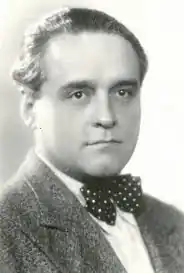

Чезар Петреску (1 грудня 1892 — 9 березня 1961) — румунський журналіст, прозаїк і дитячий письменник.
Він народився в Ходорі, повіт Ясси, в сім'ї інженера та вчителя Дімітріє Петреску. Після початкової школи в рідному селі він продовжив навчання в гімназіях у Романі та Яссах. З 1911 року він навчався на юридичному факультеті Ясського університету, який закінчив у 1915 році.
Петреску був натхненний творами Оноре де Бальзака, намагаючись написати румунський цикл романів, який би відображав "Людську комедію" Бальзака. Петреску став членом Академії Румунської Народної Республіки в 1955 році. Незважаючи на його плідну творчість як романіста, Петреску здебільшого запам'ятався своєю дитячою книжкою "Фрам, урсул полярний" ("Фрам, білий ведмідь" — цирковий персонаж тварини був названий на честь Фрама, корабля, який використовував Фрітьоф Нансен у своїх експедиціях). Він помер у Бухаресті в 1961 році і похований на міському кладовищі Беллу.